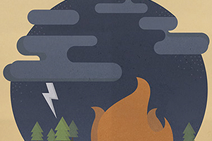
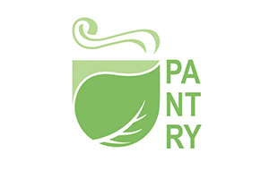
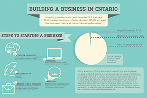

About
Portfolio
Contact
"AT TIMES, I DESIGN IN AN ATTEMPT TO SHARE MY WORLD VIEW WITH OTHERS. OTHER TIMES, I DESIGN IN AN ATTEMPT AT BETTER UNDERSTANDING OTHERS' WORLD EXPERIENCE AND INTERPRETATIONS."
CATERINA O'LEARY · 22 · OTTAWA, ON


